MR.D.I.Y. Indonesia adalah peritel perlengkapan rumah tangga terbesar di Indonesia menurut jumlah toko. Modelnya sederhana: harga murah dan satu harga nasional, 18.000+ SKU, dan toko yang dekat rumah. Semua toko disewa dan dioperasikan sendiri. Belanja barang dikonsolidasikan oleh grup regional. Dalam 9 tahun jaringannya tumbuh dari 1 toko (2017, Bekasi) menjadi 1.416 toko.
PT Daya Intiguna Yasa Tbk memegang hak merek MR.D.I.Y. di Indonesia. Perusahaan ini bagian dari jaringan internasional MR.D.I.Y. (lebih dari 5.500 toko di 13+ negara) yang dikendalikan pendiri asal Malaysia, Tan Yu Yeh. Secara hukum perusahaan ini terpisah dari MR D.I.Y. Group (M) Berhad yang tercatat di Bursa Malaysia, tetapi memakai sistem, merek, dan pengadaan grup.
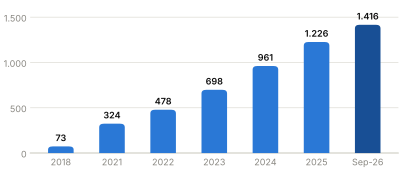
| Pemegang saham | % |
|---|---|
| MDIH (Singapore) Pte. Ltd. (grup pendiri) | 35,41 |
| Suncoast Financial Investments Ltd. | 23,16 |
| Tan Yu Yeh (langsung) | 14,07 |
| Publik / free float & lainnya | ±27 |
Misi grup: "To offer everyone everything, everyday, at always low prices." Keunggulan biaya datang dari skala pengadaan grup. Biaya itu dipakai untuk menahan harga rendah, harga rendah mendatangkan trafik, dan trafik membiayai ekspansi toko berikutnya.
Dalam prospektus, pelanggan didefinisikan sebagai "walk-in local retail consumers... fast-growing middle-class, younger to middle-aged individuals of all genders" yang mencari kebutuhan rumah tangga dengan rasio harga dan kualitas yang menarik. Komunikasi merek kini berfokus pada keluarga Indonesia, terutama ibu (brand ambassador Donna Agnesia, lalu Teuku Wisnu & Shireen Sungkar), serta pelaku UMKM.
| Dimensi | Profil target |
|---|---|
| Sosio-ekonomi | Kelas menengah dan menengah-bawah yang sensitif harga. Menurut F&S, rumah tangga kelas menengah naik dari 32,6% (2023) ke 35,1% (2028F), atau 90 jt menjadi 102 jt orang. |
| Demografi | Usia muda sampai paruh baya, pria & wanita. Pembuat keputusan utama adalah ibu rumah tangga, ditambah pelajar dan anak (stationery, mainan). |
| Geografi | Nasional. 59% toko berada di luar Jawa+Jabodetabek. Fokus ekspansi 2026: Kalimantan, Sulawesi, Papua, termasuk kabupaten tier 3 seperti Sorong Selatan, Buton Tengah, dan Tana Tidung. |
| Okasi belanja | Kebutuhan rutin rumah, Ramadan & Lebaran (hampers, toples, dekorasi), kembali ke sekolah, akhir tahun. |
| B2B mikro | UMKM yang membeli perlengkapan dan bahan usaha. Program "UMKM Tumbuh Bersama" dan pelatihan digitalisasi UMKM (rekor MURI). |
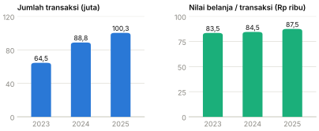
Sumber: Prospektus IPO, riset pasar Frost & Sullivan (2024). Industri home improvement diproyeksi tumbuh CAGR 10,1% (2023–2028).
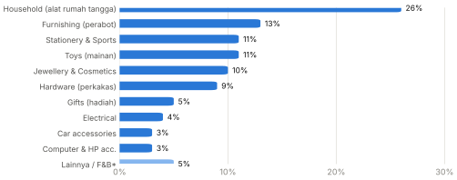
| Kategori | Contoh produk |
|---|---|
| Household & Furnishing | Penyimpanan, perlengkapan dapur & kamar mandi, piring/gelas, keranjang laundry, gorden, bantal |
| Hardware | Lem, kunci, cat, plumbing, alat taman, perkakas tangan & listrik |
| Stationery & Sports | Alat tulis & kantor, raket, perlengkapan renang, matras (kolaborasi Kiky) |
| Jewellery & Cosmetics | Aksesoris, kalung, anting, kotak kosmetik |
| Toys | Boneka, mainan, art & craft, termasuk merchandise berlisensi Disney |
| Lainnya | Aksesoris mobil, elektrikal sederhana, kado (amplop, kertas kado), aksesoris HP, F&B |
Positioning: "toko yang praktis, lengkap, dan value-for-money". Kampanye direncanakan 1–3 tahun ke depan dan dieksekusi dalam siklus 6 bulan. Sejak 2025 aktivitas digital dan kreatif dikelola in-house agar lebih gesit.
| Periode | Kampanye | Mekanik & tujuan |
|---|---|---|
| Okt 2024 | "Ada Aja Idenya" | Platform merek: solusi hemat untuk keluarga, Festival Ada Aja Idenya, literasi keuangan, pemberdayaan perempuan. Brand ambassador Donna Agnesia. |
| 2025 | "Hemat-mat-mat" | 5.000+ SKU di bawah Rp8.000 untuk memperkuat citra termurah. |
| Jun 2025 | "Inspirasi buat yang Ada Aja Idenya" | Konten DIY/kreasi UMKM, Bazaar Inspirasi di Bekasi, Bandung, Semarang, Surabaya. |
| Q4 2025 | Undian berhadiah | Voucher sampai motor & mobil, untuk menaikkan basket size (ATV naik 3,7% di 2025). |
| Q4 2025–2026 | "Hemat Mantul" → "Hemat Mantul 2.0" | Diskon terarah di ribuan produk. Kick-off flash mob CFD Bundaran HI dan konten TikTok dari setiap toko. |
| 2026 | "Super Bombastis", "Worth It Abis" | Harga spesial produk kunci, didukung sourcing kolaboratif grup. |
| Mar 2026 | Ramadan "Berkah Baik Iftar" | Teuku Wisnu & Shireen Sungkar, 650+ anak panti asuhan, rilis "Ramadan Insight". |
| Mei 2026 | "Harga Tetap Sama" | Komitmen tidak menaikkan harga umum di tengah inflasi. Diluncurkan bersamaan toko ke-1.300. |
| Jul–Nov 2026 | Back-to-School, Proudly Local, Disney Run | Kolaborasi pemasok lokal, pelatihan UMKM bersama Kemenperin dan bank, kolaborasi lisensi. |
MR.DIY Indonesia tidak memakai sub-merek format seperti grup di Malaysia (MR.DIY Express/Standard/PLUS). Toko diklasifikasikan menurut lokasi (stand-alone shopfront vs mall-based) dan ukuran (tiga pita). Tata letak memakai template modular (pencahayaan, signage, layout) yang di-scale sesuai luas toko, dengan kedalaman assortment dan jumlah staf mengikuti luas display dan penjualan.
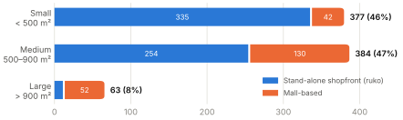
| Tier | Luas | Jun-24 aktual | % jaringan | Sep-26 estimasi | Format dominan | Lokasi khas |
|---|---|---|---|---|---|---|
| Small | < 500 m² (umumnya 250–450 m², 1–2 unit ruko) | 377 | 46% | ±685 | 89% stand-alone | Jalan utama kota kecil/kabupaten, permukiman, pasar |
| Medium | 500–900 m² (2–3 unit ruko atau unit mal) | 384 | 47% | ±645 | 66% stand-alone, 34% mal | Kota tier 1–2, community mall, sebelah hypermarket (Hypermart, Superindo) |
| Large / Flagship | > 900 m² (flagship ±1.100 m²) | 63 | 8% | ±85 | 83% mal | Mal regional & premium (Lotte Mall Jakarta, Summarecon Mall Bekasi) |
| Total | rata-rata tertimbang ±550 m² | 824 | 100% | 1.416 | 80% stand-alone | 445 dari 514 kab/kota |
Metodologi estimasi Sep-26: bauran ukuran per format (Jun-24) diterapkan ke komposisi format terbaru (80% stand-alone / 20% mal, siaran pers 3 Sep 2026). Rata-rata luas memakai titik tengah: 350 / 650 / 1.050 m².
| Parameter | Standar |
|---|---|
| Waktu dari tanda tangan sewa ke buka | 4–6 bulan |
| Konstruksi bangunan | Ditanggung landlord sesuai spek MR.DIY |
| Staf per toko | ±10 (1 supervisor + 2 asisten), insentif kinerja & anti-shrinkage |
| SKU per toko | >18.000 (rata-rata) |
| KPI bulanan | SSSG, ATV, transaksi/hari, penjualan/m²/hari |
| Stok | Level diatur pusat lewat Qube. Stock-take tahunan. |
| Format (MY) | Luas | Peran |
|---|---|---|
| MR.DIY Express | 2.000–4.000 sq ft (±185–370 m²) | Kios kecil di permukiman, capex rendah, isi produk ringkas |
| MR.DIY Standard | ±9.000–10.000 sq ft (±835–930 m²) | Format inti |
| MR.DIY PLUS | 20.000–30.000 sq ft (±1.850–2.800 m²) | Mega store, 20.000+ produk, di mal urban |
Capex rata-rata grup Malaysia: RM552 rb/toko (FY23) dan RM540 rb/toko (FY24), setara ±Rp2,0 miliar. Angka ini sejalan dengan estimasi fit-out Indonesia.
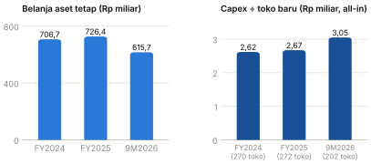
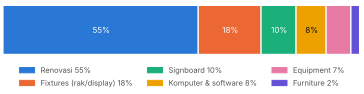
Sumber: Prospektus IPO, Bab V §6. Renovasi dan fixtures mencakup ±72% capex.
| Tier | Luas acuan | Capex fit-out | Penjualan/th |
|---|---|---|---|
| Small | ±350 m² | Rp1,2–1,6 M | Rp4–6 M |
| Medium | ±650 m² | Rp2,0–2,8 M | Rp7–10 M |
| Large/Flagship | ±1.050 m² | Rp3,5–5,0 M | Rp10–14 M |
| Rata-rata jaringan | ±550 m² | ±Rp2,0 M | Rp7,2 M |
Asumsi: capex ±Rp3,5–4 jt/m² (fit-out ±75–80% dari capex all-in Rp2,6–2,7 M per toko; cross-check dengan grup Malaysia RM540 rb). Penjualan dari densitas rata-rata ±Rp13 jt/m²/tahun. Flagship premium bisa di atas kisaran ini.
| Komponen | Rp miliar |
|---|---|
| Capex fit-out: renovasi interior, rak, signage, POS/IT, AC/equipment | 2,0–2,4 |
| Stok awal tingkat toko (18.000 SKU; payables pemasok sangat kecil) | 0,8–1,2 |
| Uang muka sewa & deposit (sewa ±Rp0,66 M/tahun per toko) | 0,3–0,7 |
| Pra-pembukaan: rekrutmen, pelatihan, grand opening | 0,1–0,2 |
| Total (base case Rp3,5 M) | 3,2–4,5 |
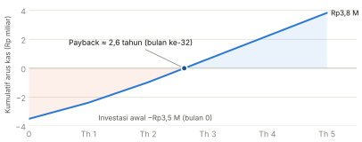
| Rp miliar | Nilai | % penj. |
|---|---|---|
| Penjualan | 7,2 | 100% |
| Laba kotor | 3,9 | ±54% |
| Staf (±10–11 orang) | (0,65) | 9% |
| Sewa (kas) | (0,66) | 9% |
| Utilitas & lain-lain toko | (0,60) | 8% |
| 4-wall EBITDA (setelah sewa) | ±2,0 | ±28% |
| Alokasi DC/HQ (±4–5%) | (0,35) | 5% |
| Kontribusi kas toko | ±1,6 | ±23% |
Kalibrasi: EBITDA perusahaan FY2025 32,7% (PSAK 116), dikurangi pembayaran sewa 9,1%, menjadi ±23,6% "EBITDA pra-PSAK 116".
| Kontribusi kas matang ↓ / Investasi → | Rp3,0 M | Rp3,5 M | Rp4,0 M | Rp4,5 M |
|---|---|---|---|---|
| Rp1,2 M/th (toko lemah, SSSG negatif) | 2,9 | 3,3 | 3,8 | 4,2 |
| Rp1,6 M/th (base) | 2,3 | 2,6 | 2,9 | 3,2 |
| Rp2,0 M/th (toko kuat) | 1,9 | 2,2 | 2,4 | 2,7 |
Dengan pola ramp-up yang sama (tahun 1 ±70%, tahun 2 ±88% dari kontribusi matang).
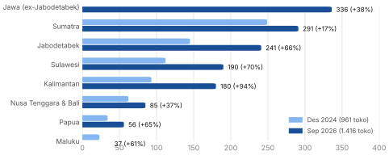
| Rp miliar | FY2024 | FY2025 | 9M2026 |
|---|---|---|---|
| Kas operasi bersih | 767 | 1.306 | 1.586 |
| Akuisisi aset tetap | (707) | (726) | (616) |
| Pembayaran sewa | (652) | (721) | (566) |
| Dividen | – | – | (444) |
| Investasi asosiasi (KKV) | – | – | (108) |
| Pinjaman bank neto | +1.315 | +83 | (33) |
Penggunaan dana IPO (±Rp416 M primer): 60% bayar pokok kredit CIMB, 30% pembukaan toko baru 2025–2026 (deposit & uang muka sewa, renovasi, fixtures), 10% modal kerja.
Sejak 2025 capex sepenuhnya didanai kas internal. Komitmen pembelian aset tetap per akhir 2025: Rp79,9 M.
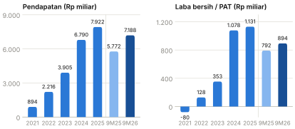
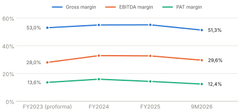
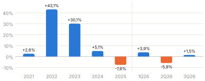
| Indikator | FY2023 (pf) | FY2024 | FY2025 | 9M2026 |
|---|---|---|---|---|
| Pendapatan (Rp M) | 4.864 | 6.790 | 7.922 | 7.188 |
| EBITDA (Rp M) | 1.362 | 2.236 | 2.589 | 2.131 |
| Laba bersih (Rp M) | 662 | 1.078 | 1.131 | 894 |
| Toko akhir periode | 698 | 961 | 1.226 | 1.416 |
| Transaksi (juta) | 64,5 | 88,8 | 100,3 | 90,0 |
| Persediaan (hari) | – | ±200 | 224 | ±203 |
| ROE | 41,0% | 34,9% | 26,8% | 26,1% (TTM) |
| Gearing | 1,7x | 0,5x | 0,4x | 0,3x |
Sumber: Public Expose 2025 & 2026, Laporan Tahunan 2025, Paparan Kinerja 1Q/2Q/3Q26. FY2024 EBITDA sesuai penyajian ulang 2026.
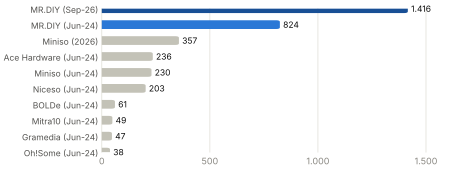
| Pemain | Posisi vs MR.DIY |
|---|---|
| Miniso, Niceso, Oh!Some, KKV | Lifestyle/design value, segmen muda, berbasis mal, IP/lisensi. Harga lebih tinggi. |
| ACE/AZKO, Mitra10, Informa | Home improvement big-box. Tiket lebih besar, toko lebih luas, jumlah toko lebih sedikit. |
| Hypermarket & minimarket | Overlap di household basic. MR.DIY justru menempel di Hypermart dan Superindo untuk trafik. |
| Toko kelontong & grosir lokal | Fragmentasi tinggi. MR.DIY menang di harga impor langsung dan kelengkapan. |
| Shopee, TikTok Shop | Ancaman harga dan kenyamanan. MR.DIY tidak punya kanal online. |
Rekomendasi berikut kami turunkan dari model MR.DIY untuk pertimbangan BOD. Penerapannya perlu disesuaikan dengan kategori, margin, dan peta lokasi perusahaan.
| # | Rekomendasi | Rasional dari studi MR.DIY | Prioritas |
|---|---|---|---|
| 1 | Tetapkan tiering 3 ukuran (S ±300–450 m², M ±500–800 m², L/Flagship ≥900 m²) dengan template modular | 93% toko MR.DIY ada di tier S/M. Toko besar dipakai secara selektif sebagai etalase di mal. Template modular memungkinkan buka 20+ toko/bulan dengan pengalaman yang konsisten. | Tinggi |
| 2 | Prioritaskan ruko stand-alone untuk kota tier 2–3. Mal hanya untuk flagship dan brand presence. | Ruko menekan sewa dan opex, sewanya lebih panjang, persaingannya lebih rendah. Porsi ruko MR.DIY naik dari 73% ke 80%. | Tinggi |
| 3 | Patok capex ±Rp3,5–4 jt/m² dan payback ≤3 tahun sebagai hurdle investasi toko | Benchmark MR.DIY ID dan MY ±Rp2 M per toko ±550 m². Negosiasikan agar landlord menanggung pekerjaan sipil. | Tinggi |
| 4 | Pilot sebelum roll-out untuk setiap generasi format (seperti Format 2.0) | MR.DIY menguji Format 2.0 di satu toko, mengukur respons pelanggan, lalu memakainya untuk semua toko baru. | Sedang |
| 5 | Pantau SSSG dan kanibalisasi sejak dini dengan GIS dan catchment analysis | Ekspansi agresif MR.DIY menurunkan SSSG ke −7,6%. Kecepatan buka toko perlu diimbangi kesehatan toko lama. | Tinggi |
| 6 | Pertimbangkan kebijakan harga sederhana (satu harga nasional / price-lock) jika rantai pasok memungkinkan | "Harga Tetap Sama" dan satu harga nasional membangun kepercayaan di daerah, tetapi menekan margin di wilayah dengan logistik mahal. | Sedang |
| 7 | Siapkan respons kompetitif di lokasi yang bertumpuk dengan MR.DIY | MR.DIY menargetkan ≥270 toko/tahun ke Kalimantan, Sulawesi, dan Papua. Diferensiasi bisa lewat kategori, layanan, atau kanal online yang tidak dimiliki MR.DIY. | Sedang |
SSSG: pertumbuhan penjualan toko yang sudah beroperasi ≥24 bulan. ATV/basket size: rata-rata nilai per transaksi. Gearing: utang/ekuitas. 4-wall EBITDA: laba toko sebelum alokasi biaya pusat. ROU: aset hak guna (sewa) menurut PSAK 116. MIY: PT Mitra Indoguna Yasa (entitas toko yang diakuisisi 2024). MDGM: tim pengadaan global grup MR.D.I.Y. di Malaysia.